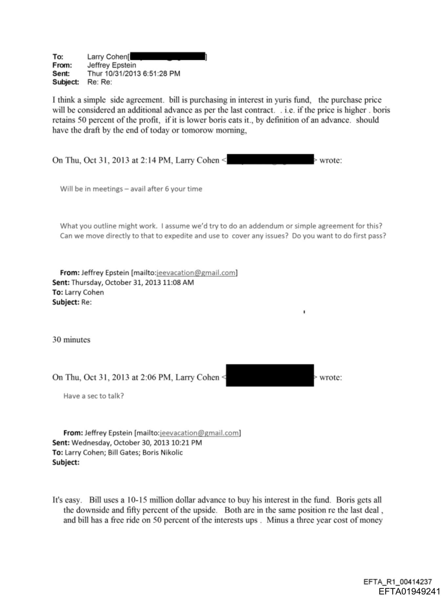

August 2013
Gates, Epstein, Boris Nikolic, and Larry Cohen appear in correspondence about how to document or resolve a Boris matter. The language turns on gift tax, 1099/income treatment, services-rendered framing, Nathan, and minimal documents.
Trail One
The trail begins with a Boris matter being argued in tax-documentation language and then turns into a proposed side agreement/addendum tied to Bill purchasing an interest in a Yuri/LST fund.


What the files show
Gates, Epstein, Boris Nikolic, and Larry Cohen appear in correspondence about how to document or resolve a Boris matter. The language turns on gift tax, 1099/income treatment, services-rendered framing, Nathan, and minimal documents.
The later chain moves to a proposed simple side agreement or addendum. The structure describes Bill purchasing an interest in Yuri's fund, with the purchase price treated as an additional advance and with Boris upside/downside language.
Money/document trail
Gift-tax, 1099/income, services-rendered, Boris, Larry Cohen, Nathan, and minimal-documents language sit in the August chain.
The October chain describes a side agreement/addendum where Bill would purchase an interest in Yuri's fund.
Boris sends LST Fund material tied to Yuri and later says to call it LST, not Yuri, if the Yuri piece failed.
The hard stop
This report does not contain an executed side agreement, wire/payment proof, tax-return exhibit, final investor ledger, or closing correspondence. The story here is the mapped correspondence and proposed structure.
Source pages
File table
| Item | Lane | Evidence | Files | Read | Boundary | Still missing |
|---|
Page gallery
Download